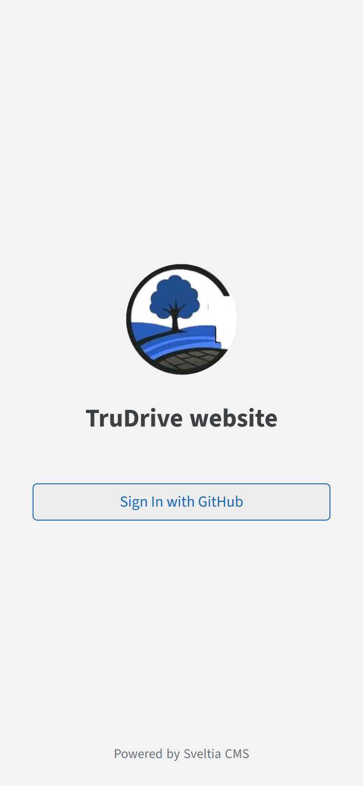
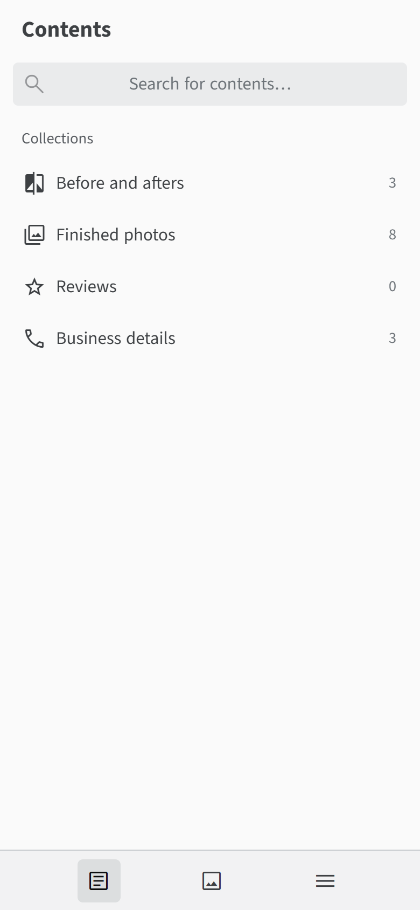
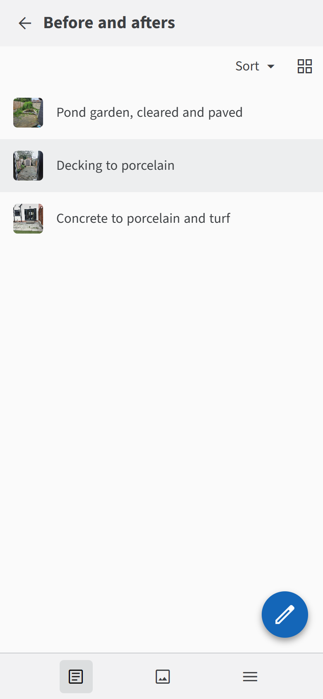
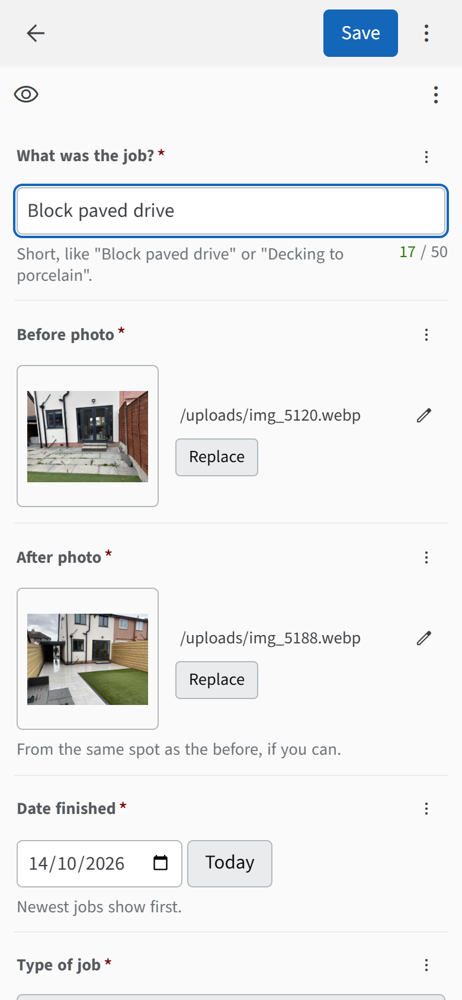
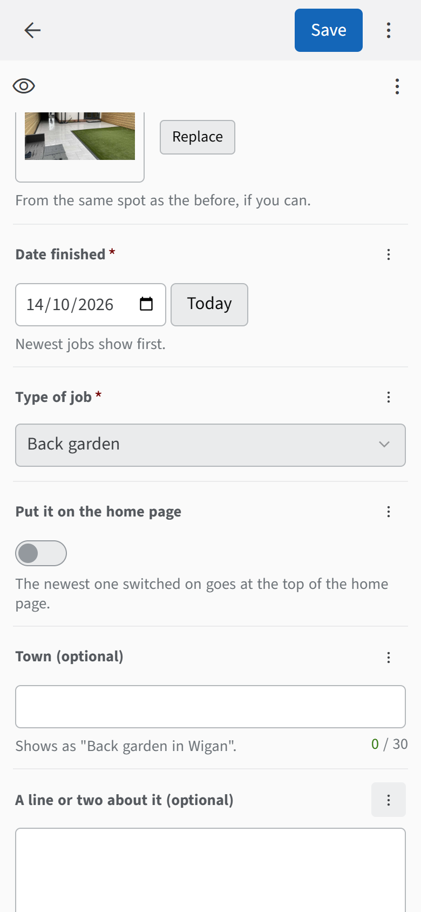
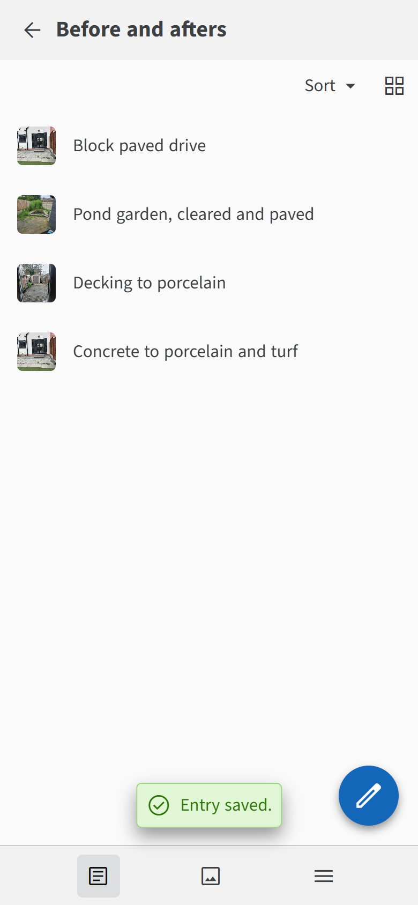
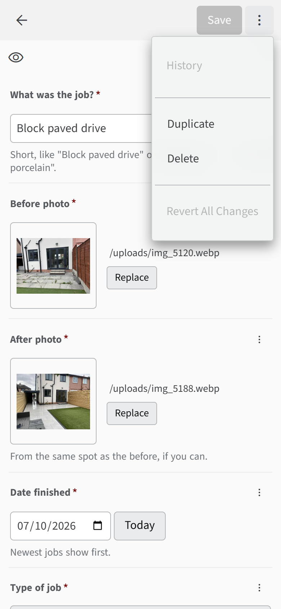
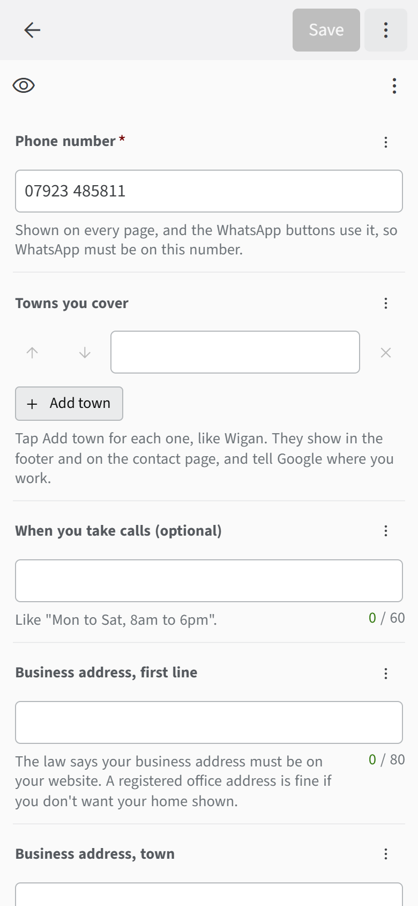
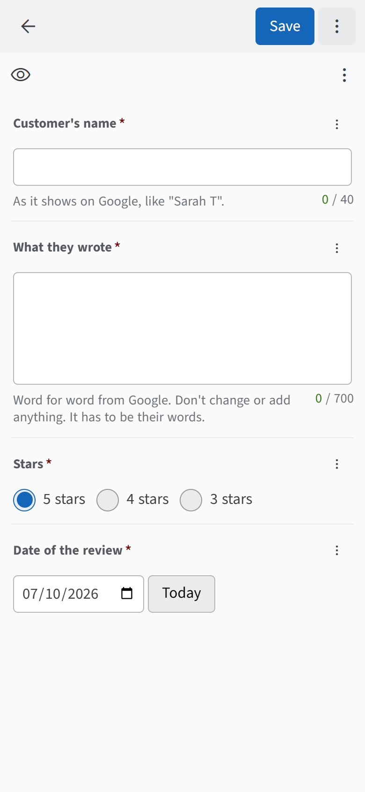

Adding a job to your website
Two minutes on your phone, from the van if you like. Press Save and it's on your website about a minute later.
Open the editor
On your phone, go to yourwebsite.co.uk/admin and tap Sign In with GitHub.
You only sign in the first time. While you're there, add it to your home screen so it opens like an app: on an iPhone tap Share, then Add to Home Screen. On Android tap the three dots, then Add to Home screen.

Tap Before and afters
That's where your jobs live. Finished photos is for single photos without a before.

Tap the blue pencil
Bottom right. Your jobs are listed newest first.

Fill in three things
- What was the job? Short, like "Block paved drive".
- Before photo: tap Browse and pick it from your photos.
- After photo: the same.
Big photos are fine. They get shrunk for you.

Anything else is up to you
If it's one of your best, switch on Put it on the home page. The newest one switched on goes at the top of your home page.
Anything marked (optional) you can skip. The date is already set to today.

Tap Save
You'll see Entry saved. Give it a minute, then it's on your website.

Everything else
Change or remove a job
Tap the job in the list. Change what you want and tap Save.
To remove it, tap the three dots at the top right, then Delete.

Your details
Tap Business details. There are three things in there, and you can't delete any of them by accident:
- Phone, towns, address and hours. Add each town you cover with Add town. They show on your website and tell Google where you work.
- Google reviews links. These put Leave a review and See our reviews buttons on your website.
- About you. A few lines in your own words, and a photo of you, the team or the van.
Your business address has to be on your website by law. A registered office address is fine if you don't want your home shown. Until it's in, your website stays out of Google.
Only change your phone number if it changes. It's on every page and the WhatsApp buttons use it, so WhatsApp has to be on the new number.

Putting a review on your website
When a customer leaves you a Google review, tap Reviews, then the blue pencil. Copy in their name and what they wrote, word for word, pick the stars and tap Save.
Only ever real reviews in their own words. Changing or making up reviews is against the law, and Google can tell.
To get more reviews, text your "leave a review" link to every customer when you finish a job. It's in your Google Business Profile under Ask for reviews.

Getting good before and afters
- Take the before and the after from the same spot, at the same angle.
- Hold the phone sideways for gardens and drives.
- Daylight, no flash, and give the lens a wipe.
A job hasn't shown up
Give it five minutes, then refresh the page. If it's still not there, open the job in the editor, check it has a title, a before photo and an after photo, and tap Save again. If a photo won't show, tap Replace and pick it again, or try a different photo.
Whatever happens with one job, the rest of your website stays up and keeps working.
It's all yours
Everything is in your name and on your logins. Nobody else needs to be involved to keep it running.
What you own
- Your web address, in your Cloudflare account.
- Your website, hosted free in the same Cloudflare account. It doesn't run out, slow down or need renewing.
- Your website's files and photos, in your GitHub account. Every change you've ever saved is kept there.
The one thing to keep an eye on
Your web address renews once a year, a few pounds, from the card on your Cloudflare account. Keep auto-renew on and keep that card up to date. If the address ran out, your website would go offline until you renewed it.
Cloudflare emails you before it renews. If a card ever fails, log in to Cloudflare, go to Billing and update it.
Your logins
Keep them in your phone's password manager:
- GitHub: this is also how you get into the editor.
- Cloudflare: your web address, your hosting and the card that pays for the address.
If you ever want someone else to work on your website, invite them to your GitHub, and remove them when they're done. You stay the owner.